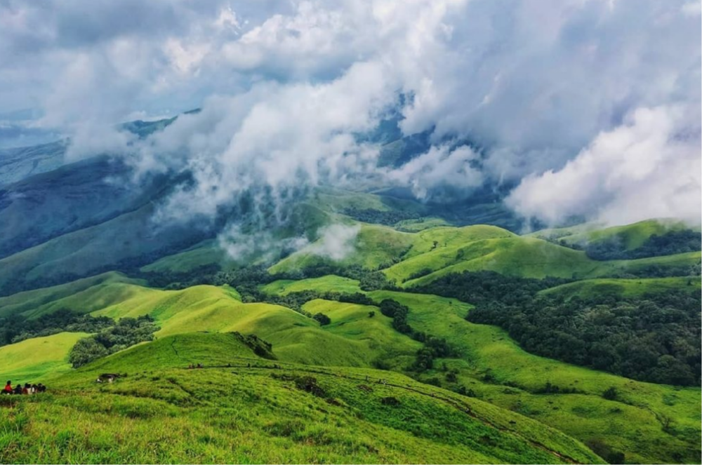

The Scotland of India — misty hills, coffee estates, and waterfalls.

Coorg, officially known as Kodagu, is a hilly district in the Western Ghats of Karnataka. Often called the "Scotland of India," it is famous for its lush green landscapes, coffee and spice plantations, and pleasant climate. The region is home to the Kodava people who have a unique culture, language, and traditions. It is one of the top coffee-producing regions in India. Popular attractions include Abbey Falls, Namdroling Monastery (Golden Temple), and Raja's Seat viewpoint.